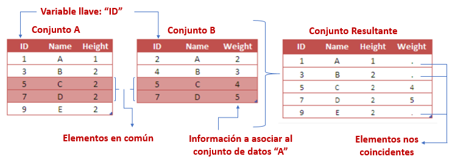
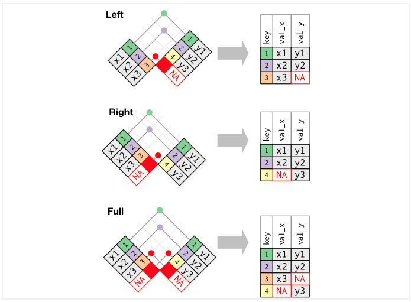
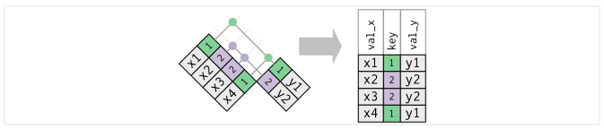
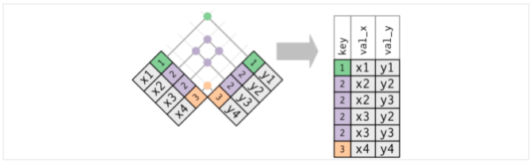

Capítulo 9 Tidyverse

9.1 Consultas de datos (dplyr)
Ahora que ya sabemos como cargar datos, aprenderemos como manipularlos con dplyr. El paquete dplyr proporciona un conjunto de funciones muy útiles para manipular data frames y así reducir el número de repeticiones, la probabilidad de cometer errores y el número de caracteres que hay que escribir. Como valor extra, podemos encontrar que la gramática de dplyr es más fácil de entender.
Revisaremos algunas de sus funciones más usadas (verbos), así como el uso de pipes (%>%) para combinarlas.
select()
filter()
arrange()
mutate()
summarise()
join()
group_by()
Primero tenemos que instalar y cargar la paquetería (parte de tidyverse):
# install.packages("dplyr")
library(dplyr)Usaremos el dataset iris que se encuentra en la paquetería datasets (el alumno puede hacer el ejercicio con la base AmesHousing)
head(iris,10)## Sepal.Length Sepal.Width Petal.Length Petal.Width Species
## 1 5.1 3.5 1.4 0.2 setosa
## 2 4.9 3.0 1.4 0.2 setosa
## 3 4.7 3.2 1.3 0.2 setosa
## 4 4.6 3.1 1.5 0.2 setosa
## 5 5.0 3.6 1.4 0.2 setosa
## 6 5.4 3.9 1.7 0.4 setosa
## 7 4.6 3.4 1.4 0.3 setosa
## 8 5.0 3.4 1.5 0.2 setosa
## 9 4.4 2.9 1.4 0.2 setosa
## 10 4.9 3.1 1.5 0.1 setosa9.1.1 select()
Observamos que nuestros datos tienen 150 observaciones y 5 variables, con select() podemos seleccionar las variables que le indiquemos.
select_ejemplo<-iris %>% select(Sepal.Length,Petal.Length,Species)
head(select_ejemplo,10)## Sepal.Length Petal.Length Species
## 1 5.1 1.4 setosa
## 2 4.9 1.4 setosa
## 3 4.7 1.3 setosa
## 4 4.6 1.5 setosa
## 5 5.0 1.4 setosa
## 6 5.4 1.7 setosa
## 7 4.6 1.4 setosa
## 8 5.0 1.5 setosa
## 9 4.4 1.4 setosa
## 10 4.9 1.5 setosaEl operador pipe (%>%) se usa para conectar múltiples acciones, en este caso solo le indicamos que en los datos de iris se seleccionan 3 varibles y se guarda este nuevo data frame en la variable select_ejemplo.
Con select() y contains podemos seleccionar varibles con alguna cadena de texto.
select_ejemplo<-iris %>% select(contains("Sepal"))
head(select_ejemplo,5)## Sepal.Length Sepal.Width
## 1 5.1 3.5
## 2 4.9 3.0
## 3 4.7 3.2
## 4 4.6 3.1
## 5 5.0 3.6De igual manera, con select(), ends_with y start_with() podemos seleccionar que inicien o terminen con alguna cadena de texto.
select_ejemplo<-iris %>% select(starts_with("Sepal"),ends_with("Length"))
head(select_ejemplo,5)## Sepal.Length Sepal.Width Petal.Length
## 1 5.1 3.5 1.4
## 2 4.9 3.0 1.4
## 3 4.7 3.2 1.3
## 4 4.6 3.1 1.5
## 5 5.0 3.6 1.4Funciones útiles para select():
contains(): Selecciona variables cuyo nombre contiene la cadena de texto.
ends_with(): Selecciona variables cuyo nombre termina con la cadena de caracteres.
everything(): Selecciona todas las columnas.
matches(): Selecciona las variables cuyos nombres coinciden con una expresión regular.
num_range(): Selecciona las variables por posición.
start_with(): Selecciona variables cuyos nombres empiezan con la cadena de caracteres.
any_of: Selecciona cualquiera de estas variables, en caso de existir
9.1.2 filter()
La función filter nos permite filtrar filas según una condición, primero notemos que la variable Species tiene tres categorías.
table(iris$Species)##
## setosa versicolor virginica
## 50 50 50Ahora usaremos la función filter para quedarnos solo con las observaciones de la especie virginica.
ejemplo_filter<- iris %>% filter(Species=="virginica")
head(ejemplo_filter,5)## Sepal.Length Sepal.Width Petal.Length Petal.Width Species
## 1 6.3 3.3 6.0 2.5 virginica
## 2 5.8 2.7 5.1 1.9 virginica
## 3 7.1 3.0 5.9 2.1 virginica
## 4 6.3 2.9 5.6 1.8 virginica
## 5 6.5 3.0 5.8 2.2 virginicaTambién se puede usar para filtrar variables numéricas:
ejemplo_filter<- iris %>% filter(Sepal.Length>5 & Sepal.Width>=3.5)
head(ejemplo_filter,5)## Sepal.Length Sepal.Width Petal.Length Petal.Width Species
## 1 5.1 3.5 1.4 0.2 setosa
## 2 5.4 3.9 1.7 0.4 setosa
## 3 5.4 3.7 1.5 0.2 setosa
## 4 5.8 4.0 1.2 0.2 setosa
## 5 5.7 4.4 1.5 0.4 setosaNotemos que en el ejemplo anterior usamos &, que nos ayuda a filtrar por dos condiciones.
También podemos usar | para filtrar por alguna de las dos condiciones.
ejemplo_filter<- iris %>% filter(Sepal.Length>5 | Sepal.Width>=3.5)
head(ejemplo_filter,5)## Sepal.Length Sepal.Width Petal.Length Petal.Width Species
## 1 5.1 3.5 1.4 0.2 setosa
## 2 5.0 3.6 1.4 0.2 setosa
## 3 5.4 3.9 1.7 0.4 setosa
## 4 5.4 3.7 1.5 0.2 setosa
## 5 5.8 4.0 1.2 0.2 setosaLas condiciones pueden ser expresiones lógicas construidas mediante los operadores relacionales y lógicos:
< : Menor que
> : Mayor que
= : Igual que
<= : Menor o igual que
>= : Mayor o igual que
!= : Diferente que
%in% : Pertenece al conjunto
is.na : Es NA
!is.na : No es NA
9.1.3 arrange()
La función arrange() se utiliza para ordenar las filas de un data frame de acuerdo a una o varias variables.
Por defecto arrange() ordena las filas por orden ascendente:
ejemplo_arrange<- iris %>% arrange(Sepal.Length)
head(ejemplo_arrange,10)## Sepal.Length Sepal.Width Petal.Length Petal.Width Species
## 1 4.3 3.0 1.1 0.1 setosa
## 2 4.4 2.9 1.4 0.2 setosa
## 3 4.4 3.0 1.3 0.2 setosa
## 4 4.4 3.2 1.3 0.2 setosa
## 5 4.5 2.3 1.3 0.3 setosa
## 6 4.6 3.1 1.5 0.2 setosa
## 7 4.6 3.4 1.4 0.3 setosa
## 8 4.6 3.6 1.0 0.2 setosa
## 9 4.6 3.2 1.4 0.2 setosa
## 10 4.7 3.2 1.3 0.2 setosa
Si las queremos ordenar de forma ascendente lo haremos del siguiente modo:
ejemplo_arrange<- iris %>% arrange(desc(Sepal.Length))
head(ejemplo_arrange,10)## Sepal.Length Sepal.Width Petal.Length Petal.Width Species
## 1 7.9 3.8 6.4 2.0 virginica
## 2 7.7 3.8 6.7 2.2 virginica
## 3 7.7 2.6 6.9 2.3 virginica
## 4 7.7 2.8 6.7 2.0 virginica
## 5 7.7 3.0 6.1 2.3 virginica
## 6 7.6 3.0 6.6 2.1 virginica
## 7 7.4 2.8 6.1 1.9 virginica
## 8 7.3 2.9 6.3 1.8 virginica
## 9 7.2 3.6 6.1 2.5 virginica
## 10 7.2 3.2 6.0 1.8 virginica9.1.4 mutate()
Con la función mutate() podemos computar tranformaciones de variables en un data frame. A menudo, tendremos la necesidad de crear nuevas variables que se calculan a partir de variables existentes,mutate() nos proporciona una interface clara para realizar este tipo de operaciones.
Por ejemplo haremos la suma de las variables Sepal.Lenght y Sepal.Width:
ejemplo_mutate<- iris %>% select(Sepal.Length,Sepal.Width) %>%
mutate(Suma=Sepal.Length+Sepal.Width)
head(ejemplo_mutate,5)## Sepal.Length Sepal.Width Suma
## 1 5.1 3.5 8.6
## 2 4.9 3.0 7.9
## 3 4.7 3.2 7.9
## 4 4.6 3.1 7.7
## 5 5.0 3.6 8.6Notemos que en el ejemplo anterior usamos dos pipes (%>%), como habiamos mencionado se pueden usar los necesarios para combinar funciones.
9.1.5 summarise()
La función summarise() funciona de forma análoga a la función mutate, excepto que en lugar de añadir nuevas columnas crea un nuevo data frame.
Podemos usar el ejemplo anterior y calcular la media de la varible creada Suma:
ejemplo_summarise<- iris %>% select(Sepal.Length,Sepal.Width) %>%
mutate(Suma=Sepal.Length+Sepal.Width) %>%
summarise(Media_Suma=mean(Suma))
ejemplo_summarise## Media_Suma
## 1 8.900667Solo fue necesario agregar un pipe, especificar el nombre de la varible creada y la operación a realizar.
A continuación se muestran funciones que trabajando conjuntamente con la función summarise() facilitarán nuestro trabajo diario. Las primeras pertenecen al paquete base y las otras son del paquete dplyr. Todas ellas toman como argumento un vector y devuelven un único resultado:
min(), max() : Valores max y min.
mean() : Media.
median() : Mediana.
sum() : Suma de los valores.
var(), sd() : Varianza y desviación estandar.
first() : Primer valor en un vector.
last() : El último valor en un vector
n() : El número de valores en un vector.
n_distinc() : El número de valores distintos en un vector.
nth() : Extrar el valor que ocupa la posición n en un vector.
Mas adelante veremos como combinar esta función con la función group_by.
9.1.6 group_by()
La función group_by() agrupa un conjunto de filas seleccionado en un conjunto de filas de resumen de acuerdo con los valores de una o más columnas o expresiones.
Usaremos el ejemplo anterior, primero creamos nuestra nueva variable Suma, despues agrupamos por especie y al final sacamos la media de la variable Suma pero esta vez, por la función group_by, nos regresara una media por cada grupo creado, es decir, nos regresara el promedio de la suma por especie.
ejemplo_groupby<- iris %>%
mutate(Suma=Sepal.Length+Sepal.Width) %>%
group_by(Species) %>%
summarise(Media_Suma=mean(Suma))
ejemplo_groupby## # A tibble: 3 × 2
## Species Media_Suma
## <fct> <dbl>
## 1 setosa 8.43
## 2 versicolor 8.71
## 3 virginica 9.569.1.7 rowwise()
Esta función permite calcular nuevas variables un renglón a la vez.
iris %>%
mutate(suma = sum(Sepal.Length, Sepal.Width, Petal.Length, Petal.Width)) %>%
ungroup()## Sepal.Length Sepal.Width Petal.Length Petal.Width Species suma
## 1 5.1 3.5 1.4 0.2 setosa 2078.7
## 2 4.9 3.0 1.4 0.2 setosa 2078.7
## 3 4.7 3.2 1.3 0.2 setosa 2078.7
## 4 4.6 3.1 1.5 0.2 setosa 2078.7
## 5 5.0 3.6 1.4 0.2 setosa 2078.7
## 6 5.4 3.9 1.7 0.4 setosa 2078.7
## 7 4.6 3.4 1.4 0.3 setosa 2078.7
## 8 5.0 3.4 1.5 0.2 setosa 2078.7
## 9 4.4 2.9 1.4 0.2 setosa 2078.7
## 10 4.9 3.1 1.5 0.1 setosa 2078.7
## 11 5.4 3.7 1.5 0.2 setosa 2078.7
## 12 4.8 3.4 1.6 0.2 setosa 2078.7
## 13 4.8 3.0 1.4 0.1 setosa 2078.7
## 14 4.3 3.0 1.1 0.1 setosa 2078.7
## 15 5.8 4.0 1.2 0.2 setosa 2078.7
## 16 5.7 4.4 1.5 0.4 setosa 2078.7
## 17 5.4 3.9 1.3 0.4 setosa 2078.7
## 18 5.1 3.5 1.4 0.3 setosa 2078.7
## 19 5.7 3.8 1.7 0.3 setosa 2078.7
## 20 5.1 3.8 1.5 0.3 setosa 2078.7
## 21 5.4 3.4 1.7 0.2 setosa 2078.7
## 22 5.1 3.7 1.5 0.4 setosa 2078.7
## 23 4.6 3.6 1.0 0.2 setosa 2078.7
## 24 5.1 3.3 1.7 0.5 setosa 2078.7
## 25 4.8 3.4 1.9 0.2 setosa 2078.7
## 26 5.0 3.0 1.6 0.2 setosa 2078.7
## 27 5.0 3.4 1.6 0.4 setosa 2078.7
## 28 5.2 3.5 1.5 0.2 setosa 2078.7
## 29 5.2 3.4 1.4 0.2 setosa 2078.7
## 30 4.7 3.2 1.6 0.2 setosa 2078.7
## 31 4.8 3.1 1.6 0.2 setosa 2078.7
## 32 5.4 3.4 1.5 0.4 setosa 2078.7
## 33 5.2 4.1 1.5 0.1 setosa 2078.7
## 34 5.5 4.2 1.4 0.2 setosa 2078.7
## 35 4.9 3.1 1.5 0.2 setosa 2078.7
## 36 5.0 3.2 1.2 0.2 setosa 2078.7
## 37 5.5 3.5 1.3 0.2 setosa 2078.7
## 38 4.9 3.6 1.4 0.1 setosa 2078.7
## 39 4.4 3.0 1.3 0.2 setosa 2078.7
## 40 5.1 3.4 1.5 0.2 setosa 2078.7
## 41 5.0 3.5 1.3 0.3 setosa 2078.7
## 42 4.5 2.3 1.3 0.3 setosa 2078.7
## 43 4.4 3.2 1.3 0.2 setosa 2078.7
## 44 5.0 3.5 1.6 0.6 setosa 2078.7
## 45 5.1 3.8 1.9 0.4 setosa 2078.7
## 46 4.8 3.0 1.4 0.3 setosa 2078.7
## 47 5.1 3.8 1.6 0.2 setosa 2078.7
## 48 4.6 3.2 1.4 0.2 setosa 2078.7
## 49 5.3 3.7 1.5 0.2 setosa 2078.7
## 50 5.0 3.3 1.4 0.2 setosa 2078.7
## 51 7.0 3.2 4.7 1.4 versicolor 2078.7
## 52 6.4 3.2 4.5 1.5 versicolor 2078.7
## 53 6.9 3.1 4.9 1.5 versicolor 2078.7
## 54 5.5 2.3 4.0 1.3 versicolor 2078.7
## 55 6.5 2.8 4.6 1.5 versicolor 2078.7
## 56 5.7 2.8 4.5 1.3 versicolor 2078.7
## 57 6.3 3.3 4.7 1.6 versicolor 2078.7
## 58 4.9 2.4 3.3 1.0 versicolor 2078.7
## 59 6.6 2.9 4.6 1.3 versicolor 2078.7
## 60 5.2 2.7 3.9 1.4 versicolor 2078.7
## 61 5.0 2.0 3.5 1.0 versicolor 2078.7
## 62 5.9 3.0 4.2 1.5 versicolor 2078.7
## 63 6.0 2.2 4.0 1.0 versicolor 2078.7
## 64 6.1 2.9 4.7 1.4 versicolor 2078.7
## 65 5.6 2.9 3.6 1.3 versicolor 2078.7
## 66 6.7 3.1 4.4 1.4 versicolor 2078.7
## 67 5.6 3.0 4.5 1.5 versicolor 2078.7
## 68 5.8 2.7 4.1 1.0 versicolor 2078.7
## 69 6.2 2.2 4.5 1.5 versicolor 2078.7
## 70 5.6 2.5 3.9 1.1 versicolor 2078.7
## 71 5.9 3.2 4.8 1.8 versicolor 2078.7
## 72 6.1 2.8 4.0 1.3 versicolor 2078.7
## 73 6.3 2.5 4.9 1.5 versicolor 2078.7
## 74 6.1 2.8 4.7 1.2 versicolor 2078.7
## 75 6.4 2.9 4.3 1.3 versicolor 2078.7
## 76 6.6 3.0 4.4 1.4 versicolor 2078.7
## 77 6.8 2.8 4.8 1.4 versicolor 2078.7
## 78 6.7 3.0 5.0 1.7 versicolor 2078.7
## 79 6.0 2.9 4.5 1.5 versicolor 2078.7
## 80 5.7 2.6 3.5 1.0 versicolor 2078.7
## 81 5.5 2.4 3.8 1.1 versicolor 2078.7
## 82 5.5 2.4 3.7 1.0 versicolor 2078.7
## 83 5.8 2.7 3.9 1.2 versicolor 2078.7
## 84 6.0 2.7 5.1 1.6 versicolor 2078.7
## 85 5.4 3.0 4.5 1.5 versicolor 2078.7
## 86 6.0 3.4 4.5 1.6 versicolor 2078.7
## 87 6.7 3.1 4.7 1.5 versicolor 2078.7
## 88 6.3 2.3 4.4 1.3 versicolor 2078.7
## 89 5.6 3.0 4.1 1.3 versicolor 2078.7
## 90 5.5 2.5 4.0 1.3 versicolor 2078.7
## 91 5.5 2.6 4.4 1.2 versicolor 2078.7
## 92 6.1 3.0 4.6 1.4 versicolor 2078.7
## 93 5.8 2.6 4.0 1.2 versicolor 2078.7
## 94 5.0 2.3 3.3 1.0 versicolor 2078.7
## 95 5.6 2.7 4.2 1.3 versicolor 2078.7
## 96 5.7 3.0 4.2 1.2 versicolor 2078.7
## 97 5.7 2.9 4.2 1.3 versicolor 2078.7
## 98 6.2 2.9 4.3 1.3 versicolor 2078.7
## 99 5.1 2.5 3.0 1.1 versicolor 2078.7
## 100 5.7 2.8 4.1 1.3 versicolor 2078.7
## 101 6.3 3.3 6.0 2.5 virginica 2078.7
## 102 5.8 2.7 5.1 1.9 virginica 2078.7
## 103 7.1 3.0 5.9 2.1 virginica 2078.7
## 104 6.3 2.9 5.6 1.8 virginica 2078.7
## 105 6.5 3.0 5.8 2.2 virginica 2078.7
## 106 7.6 3.0 6.6 2.1 virginica 2078.7
## 107 4.9 2.5 4.5 1.7 virginica 2078.7
## 108 7.3 2.9 6.3 1.8 virginica 2078.7
## 109 6.7 2.5 5.8 1.8 virginica 2078.7
## 110 7.2 3.6 6.1 2.5 virginica 2078.7
## 111 6.5 3.2 5.1 2.0 virginica 2078.7
## 112 6.4 2.7 5.3 1.9 virginica 2078.7
## 113 6.8 3.0 5.5 2.1 virginica 2078.7
## 114 5.7 2.5 5.0 2.0 virginica 2078.7
## 115 5.8 2.8 5.1 2.4 virginica 2078.7
## 116 6.4 3.2 5.3 2.3 virginica 2078.7
## 117 6.5 3.0 5.5 1.8 virginica 2078.7
## 118 7.7 3.8 6.7 2.2 virginica 2078.7
## 119 7.7 2.6 6.9 2.3 virginica 2078.7
## 120 6.0 2.2 5.0 1.5 virginica 2078.7
## 121 6.9 3.2 5.7 2.3 virginica 2078.7
## 122 5.6 2.8 4.9 2.0 virginica 2078.7
## 123 7.7 2.8 6.7 2.0 virginica 2078.7
## 124 6.3 2.7 4.9 1.8 virginica 2078.7
## 125 6.7 3.3 5.7 2.1 virginica 2078.7
## 126 7.2 3.2 6.0 1.8 virginica 2078.7
## 127 6.2 2.8 4.8 1.8 virginica 2078.7
## 128 6.1 3.0 4.9 1.8 virginica 2078.7
## 129 6.4 2.8 5.6 2.1 virginica 2078.7
## 130 7.2 3.0 5.8 1.6 virginica 2078.7
## 131 7.4 2.8 6.1 1.9 virginica 2078.7
## 132 7.9 3.8 6.4 2.0 virginica 2078.7
## 133 6.4 2.8 5.6 2.2 virginica 2078.7
## 134 6.3 2.8 5.1 1.5 virginica 2078.7
## 135 6.1 2.6 5.6 1.4 virginica 2078.7
## 136 7.7 3.0 6.1 2.3 virginica 2078.7
## 137 6.3 3.4 5.6 2.4 virginica 2078.7
## 138 6.4 3.1 5.5 1.8 virginica 2078.7
## 139 6.0 3.0 4.8 1.8 virginica 2078.7
## 140 6.9 3.1 5.4 2.1 virginica 2078.7
## 141 6.7 3.1 5.6 2.4 virginica 2078.7
## 142 6.9 3.1 5.1 2.3 virginica 2078.7
## 143 5.8 2.7 5.1 1.9 virginica 2078.7
## 144 6.8 3.2 5.9 2.3 virginica 2078.7
## 145 6.7 3.3 5.7 2.5 virginica 2078.7
## 146 6.7 3.0 5.2 2.3 virginica 2078.7
## 147 6.3 2.5 5.0 1.9 virginica 2078.7
## 148 6.5 3.0 5.2 2.0 virginica 2078.7
## 149 6.2 3.4 5.4 2.3 virginica 2078.7
## 150 5.9 3.0 5.1 1.8 virginica 2078.7¿Qué pasó en el ejemplo pasado?
Ahora veamos qué pasa al intriducir rowwise al pipeline
iris %>%
rowwise() %>%
mutate(suma = Sepal.Length + Sepal.Width + Petal.Length + Petal.Width) %>%
ungroup()## # A tibble: 150 × 6
## Sepal.Length Sepal.Width Petal.Length Petal.Width Species suma
## <dbl> <dbl> <dbl> <dbl> <fct> <dbl>
## 1 5.1 3.5 1.4 0.2 setosa 10.2
## 2 4.9 3 1.4 0.2 setosa 9.5
## 3 4.7 3.2 1.3 0.2 setosa 9.4
## 4 4.6 3.1 1.5 0.2 setosa 9.4
## 5 5 3.6 1.4 0.2 setosa 10.2
## 6 5.4 3.9 1.7 0.4 setosa 11.4
## 7 4.6 3.4 1.4 0.3 setosa 9.7
## 8 5 3.4 1.5 0.2 setosa 10.1
## 9 4.4 2.9 1.4 0.2 setosa 8.9
## 10 4.9 3.1 1.5 0.1 setosa 9.6
## # … with 140 more rowsiris %>%
rowwise() %>%
mutate(suma = sum(across(Sepal.Length:Petal.Width))) %>%
ungroup()## # A tibble: 150 × 6
## Sepal.Length Sepal.Width Petal.Length Petal.Width Species suma
## <dbl> <dbl> <dbl> <dbl> <fct> <dbl>
## 1 5.1 3.5 1.4 0.2 setosa 10.2
## 2 4.9 3 1.4 0.2 setosa 9.5
## 3 4.7 3.2 1.3 0.2 setosa 9.4
## 4 4.6 3.1 1.5 0.2 setosa 9.4
## 5 5 3.6 1.4 0.2 setosa 10.2
## 6 5.4 3.9 1.7 0.4 setosa 11.4
## 7 4.6 3.4 1.4 0.3 setosa 9.7
## 8 5 3.4 1.5 0.2 setosa 10.1
## 9 4.4 2.9 1.4 0.2 setosa 8.9
## 10 4.9 3.1 1.5 0.1 setosa 9.6
## # … with 140 more rows9.2 Cruces de tablas
Una operación fundamental por agregar a nuestro flujo de trabajo es el cruce de tablas, las cuales pueden proceder de la misma o de distinta fuente. Comúnmente este proceso se realiza para enriquecer y unificar la información proveniente de distintas tablas de datos.
Para lograr esta tarea es indispensable que exista una variable llave en ambos conjuntos de datos que sirva como puente o identificador de cada caso o renglón. Si se cuenta con la columna llave entonces será posible cruzar las tablas y lograr su enriquecimiento.
En el siguiente ejemplo se muestra el uso de la variable llave a través de la columna “ID.” Se puede apreciar que en la tabla final se cuenta con información de la variable “Weight” para los elementos que existen en las tablas “A” y “B.”

La función que hace posible el complemento de la información es llamada left_join(). El primer argumento de la función corresponde al conjunto de datos que se desea complementar, mientras que en el segundo argumento se ingresa el conjunto de datos con la información que enriquecerá al primer conjunto. Es necesario especificar en el argumento “by” el nombre de la columna llave.
conjuntoX <- data.frame("Llave" = LETTERS[1:8], "C1" = 1:8)
conjuntoY <- data.frame("Llave" = sample(LETTERS[11:3], size = 9, replace = T),
"Ex1" = letters[2:10],
"Ex2" = 1002:1010,"Ex3" = paste0(letters[12:20],2:10))
conjuntoX## Llave C1
## 1 A 1
## 2 B 2
## 3 C 3
## 4 D 4
## 5 E 5
## 6 F 6
## 7 G 7
## 8 H 8conjuntoY## Llave Ex1 Ex2 Ex3
## 1 H b 1002 l2
## 2 F c 1003 m3
## 3 F d 1004 n4
## 4 H e 1005 o5
## 5 G f 1006 p6
## 6 D g 1007 q7
## 7 G h 1008 r8
## 8 K i 1009 s9
## 9 F j 1010 t10left_join(x = conjuntoX, y = conjuntoY, by = "Llave")## Llave C1 Ex1 Ex2 Ex3
## 1 A 1 <NA> NA <NA>
## 2 B 2 <NA> NA <NA>
## 3 C 3 <NA> NA <NA>
## 4 D 4 g 1007 q7
## 5 E 5 <NA> NA <NA>
## 6 F 6 c 1003 m3
## 7 F 6 d 1004 n4
## 8 F 6 j 1010 t10
## 9 G 7 f 1006 p6
## 10 G 7 h 1008 r8
## 11 H 8 b 1002 l2
## 12 H 8 e 1005 o5Es posible que no todas las observaciones de un conjunto de datos estén en el otro conjunto, cuando esto sucede un aviso aparece indicando que los factores o categorías de la variable llave son diferentes. En caso de no encontrarse uno o más de los valores, el resultado para esos casos será NA (no disponible, por su traducción del inglés “Not Available”), y aparecerá siempre que no se cuente con información en un registro, como se muestra en el ejemplo anterior.
Existen diferentes maneras de conjuntar datos. La primera, como en el ejemplo mostrado anteriormente, se hace por lo izquierda y quiere decir que, al primer conjunto de datos es al que se le agregará la información del segundo conjunto. Esto se realizará exclusivamente para aquellos registros del segundo conjunto que existan en el primero, los cuales se identifican mediante la llave definida.
Otra manera de realizar la conjunción de los datos es por la derecha. Funciona de manera análoga a la primera, con la diferencia de que son los datos del primer conjunto los que se agregan al segundo. De igual manera, esto sólo ocurre para los elemento del primer conjunto que se encuentran en el segundo y que son identificables a través de una llave. La función en R que permite realizar la conjunción por la derecha lleva por nombre right_join().
right_join(x = conjuntoX, y = conjuntoY, by = "Llave")## Llave C1 Ex1 Ex2 Ex3
## 1 D 4 g 1007 q7
## 2 F 6 c 1003 m3
## 3 F 6 d 1004 n4
## 4 F 6 j 1010 t10
## 5 G 7 f 1006 p6
## 6 G 7 h 1008 r8
## 7 H 8 b 1002 l2
## 8 H 8 e 1005 o5
## 9 K NA i 1009 s9Una tercer forma de unir los datos es a través de la función full_join(), la cual es una combinación de las dos anteriores. Agrega todos los elementos llave tanto del primer conjunto como del segundo y posteriormente realiza el cruce de información de ambos conjuntos.
full_join(x = conjuntoX, y = conjuntoY, by = "Llave")## Llave C1 Ex1 Ex2 Ex3
## 1 A 1 <NA> NA <NA>
## 2 B 2 <NA> NA <NA>
## 3 C 3 <NA> NA <NA>
## 4 D 4 g 1007 q7
## 5 E 5 <NA> NA <NA>
## 6 F 6 c 1003 m3
## 7 F 6 d 1004 n4
## 8 F 6 j 1010 t10
## 9 G 7 f 1006 p6
## 10 G 7 h 1008 r8
## 11 H 8 b 1002 l2
## 12 H 8 e 1005 o5
## 13 K NA i 1009 s9Estos 3 primeros métodos pueden resumirse en la siguiente imagen:

Adicionalmente, existen otras funciones que ayudan con gestionar las operaciones entre conjuntos de datos. Tal es el caso de la función inner_join(), la cuál no es otra cosa que el filtro de aquellos elementos que se tengan en común en ambas tablas y la combinación de un join. Internamente, la función primero filtra el ID de aquellos elementos que tienen presencia en ambas tablas y finalmente hace el cruce de los datos.
inner_join(x = conjuntoX, y = conjuntoY, by = "Llave")## Llave C1 Ex1 Ex2 Ex3
## 1 D 4 g 1007 q7
## 2 F 6 c 1003 m3
## 3 F 6 d 1004 n4
## 4 F 6 j 1010 t10
## 5 G 7 f 1006 p6
## 6 G 7 h 1008 r8
## 7 H 8 b 1002 l2
## 8 H 8 e 1005 o5Existen otras dos operaciones interesantes que agilizan la extracción de subconjuntos de tablas sin cruzar información. Se trata de las funciones semi_join() y anti_join(), las cuales funcionan de la siguiente manera:
La función semi_join() detecta y filtra los elementos del primer conjunto que se encuentran en un segundo conjunto, mientras que la función anti_join() es su complemento, pues regresa los elementos del primer conjunto que no se encuentran en el segundo. En ambos casos, la información contenida en el segundo conjunto no es trasmitida al resultado.
A continuación se presenta su ejemplificación:
semi_join(x = conjuntoX, y = conjuntoY, by = "Llave")## Llave C1
## 1 D 4
## 2 F 6
## 3 G 7
## 4 H 8Ahora revisemos el caso de la función anti_join()
anti_join(x = conjuntoX, y = conjuntoY, by = "Llave")## Llave C1
## 1 A 1
## 2 B 2
## 3 C 3
## 4 E 5WARNING: llaves duplicadas
La mayoría de los ejemplos anteriores suponen que las llaves son únicas en cada conjunto de datos, sin embargo, esto no es cierto en una gran cantidad de ocasiones. Existen dos casos importantes por analizar:
- Llaves duplicadas en 1 conjunto de datos
- Llaves duplicadas en ambos conjuntos
El caso más sencillo es cuando solo uno de los conjuntos contiene llaves duplicadas. En este caso se creará un renglón por cada duplicado.

En el segundo caso, por cada elemento duplicado en el primer conjunto habrá como resultado un elemento por cada duplicado en el segundo conjunto. A continuación se ejemplifica este escenario.

9.3 Órden y reestructuración de tablas
Un conjunto de datos puede ser representado de muchas maneras distintas y contener en todos los casos la misma información. Sin embargo, no todos los modos en que se presenta la información resulta óptimo para su procesamiento y análisis. Los conjuntos de datos ordenados serán más fáciles de trabajar y analizar.
Algunas de las características principales que presentan los conjuntos de datos ordenados son las siguientes:
Cada variable debe tener su propia columna.
Cada observación debe tener su propio renglón.
Cada valor debe tener su propia celda.

La figura anterior muestra la estructura de orden que debe tener un conjunto de datos. A pesar de que pueda parecer intuitivo y sencillo, en la práctica es considerable el número de conjuntos de datos desordenados. La limpieza y ordenamiento debe ser trabajado de forma impecable a fin de que puedan realizarse buenas prácticas. El tiempo de limpieza y ordenamiento varía mucho dependiendo de la dimensión del conjunto de datos.
Algunos de los principales problemas que pueden tener los conjuntos de datos no ordenados son:
- Una variable puede estar dispersa en múltiples columnas
- Una observación puede estar esparcida en múltiples renglones
La paquetería tidyr cuenta con funciones para resolver dichos problemas. Entre las principales funciones que tiene la paquetería, se encuentran pivot_longer(), pivot_wider(), separate() y unite(), mismas que se analizarán a continuación.
9.3.1 Pivote horizontal
La función pivot_wider() resulta muy útil a la hora de organizar los datos. Su función consiste en dispersar una variable clave en múltiples columnas.
Lo primero que se debe hacer para poder hacer uso de dicha función es instalar y cargar la librería.
El siguiente conjunto de datos contiene el número de localidades rurales y urbanas por municipio de la Ciudad de México. Como es posible observar, algunos municipios aparecen más de una vez en el marco de datos, esto se debe a que cada municipio puede tener ambos ámbitos, rural y urbano. Para hacer que el conjunto de datos sea ordenado, es necesario que cada observación aparezca una sola vez por renglón y cada una de las categorías (rural y urbano) de la variable “Ámbito” deberá ocupar el lugar de una columna.
El siguiente código muestra cómo convertir los datos no ordenados en un conjunto ordenado.
library(tidyr)
Resumen <- readRDS("data/loc_mun_cdmx.rds")
Resumen %>% pivot_wider(
names_from = Ambito,
values_from = Total_localidades
)## # A tibble: 16 × 3
## NOM_MUN Rural Urbano
## <chr> <int> <int>
## 1 Álvaro Obregón 3 1
## 2 La Magdalena Contreras 8 1
## 3 Cuajimalpa de Morelos 14 2
## 4 Tláhuac 31 5
## 5 Xochimilco 78 1
## 6 Tlalpan 95 4
## 7 Milpa Alta 187 10
## 8 Azcapotzalco NA 1
## 9 Benito Juárez NA 1
## 10 Coyoacán NA 1
## 11 Cuauhtémoc NA 1
## 12 Gustavo A. Madero NA 1
## 13 Iztacalco NA 1
## 14 Iztapalapa NA 1
## 15 Miguel Hidalgo NA 1
## 16 Venustiano Carranza NA 1En la tabla actual existe ahora un y sólo un registro por cada observación (nombre de municipio en este caso). El valor que le corresponde a cada una de las columnas creadas es la frecuencia absoluta de localidades que tienen la característica “Rural” y “Urbano” respectivamente.
Pero… ¿qué pasa cuando no existen todos los valores en ambas columnas? Si no se especifica la manera de llenar los datos faltantes, estos contendrán NAs. Siempre se puede elegir el caracter o número con el cual se imputan los datos faltantes.
fish_encounters %>%
pivot_wider(names_from = station, values_from = seen)## # A tibble: 19 × 12
## fish Release I80_1 Lisbon Rstr Base_TD BCE BCW BCE2 BCW2 MAE MAW
## <fct> <int> <int> <int> <int> <int> <int> <int> <int> <int> <int> <int>
## 1 4842 1 1 1 1 1 1 1 1 1 1 1
## 2 4843 1 1 1 1 1 1 1 1 1 1 1
## 3 4844 1 1 1 1 1 1 1 1 1 1 1
## 4 4845 1 1 1 1 1 NA NA NA NA NA NA
## 5 4847 1 1 1 NA NA NA NA NA NA NA NA
## 6 4848 1 1 1 1 NA NA NA NA NA NA NA
## 7 4849 1 1 NA NA NA NA NA NA NA NA NA
## 8 4850 1 1 NA 1 1 1 1 NA NA NA NA
## 9 4851 1 1 NA NA NA NA NA NA NA NA NA
## 10 4854 1 1 NA NA NA NA NA NA NA NA NA
## 11 4855 1 1 1 1 1 NA NA NA NA NA NA
## 12 4857 1 1 1 1 1 1 1 1 1 NA NA
## 13 4858 1 1 1 1 1 1 1 1 1 1 1
## 14 4859 1 1 1 1 1 NA NA NA NA NA NA
## 15 4861 1 1 1 1 1 1 1 1 1 1 1
## 16 4862 1 1 1 1 1 1 1 1 1 NA NA
## 17 4863 1 1 NA NA NA NA NA NA NA NA NA
## 18 4864 1 1 NA NA NA NA NA NA NA NA NA
## 19 4865 1 1 1 NA NA NA NA NA NA NA NAfish_encounters %>%
pivot_wider(names_from = station, values_from = seen, values_fill = 0)## # A tibble: 19 × 12
## fish Release I80_1 Lisbon Rstr Base_TD BCE BCW BCE2 BCW2 MAE MAW
## <fct> <int> <int> <int> <int> <int> <int> <int> <int> <int> <int> <int>
## 1 4842 1 1 1 1 1 1 1 1 1 1 1
## 2 4843 1 1 1 1 1 1 1 1 1 1 1
## 3 4844 1 1 1 1 1 1 1 1 1 1 1
## 4 4845 1 1 1 1 1 0 0 0 0 0 0
## 5 4847 1 1 1 0 0 0 0 0 0 0 0
## 6 4848 1 1 1 1 0 0 0 0 0 0 0
## 7 4849 1 1 0 0 0 0 0 0 0 0 0
## 8 4850 1 1 0 1 1 1 1 0 0 0 0
## 9 4851 1 1 0 0 0 0 0 0 0 0 0
## 10 4854 1 1 0 0 0 0 0 0 0 0 0
## 11 4855 1 1 1 1 1 0 0 0 0 0 0
## 12 4857 1 1 1 1 1 1 1 1 1 0 0
## 13 4858 1 1 1 1 1 1 1 1 1 1 1
## 14 4859 1 1 1 1 1 0 0 0 0 0 0
## 15 4861 1 1 1 1 1 1 1 1 1 1 1
## 16 4862 1 1 1 1 1 1 1 1 1 0 0
## 17 4863 1 1 0 0 0 0 0 0 0 0 0
## 18 4864 1 1 0 0 0 0 0 0 0 0 0
## 19 4865 1 1 1 0 0 0 0 0 0 0 0En caso de que existan múltiples columnas que se desean dispersar mediante el pivote de una columna con múltiples categorías, es posible especificar tal reestructuración a través del siguiente código.
us_rent_income %>% arrange(NAME)## # A tibble: 104 × 5
## GEOID NAME variable estimate moe
## <chr> <chr> <chr> <dbl> <dbl>
## 1 01 Alabama income 24476 136
## 2 01 Alabama rent 747 3
## 3 02 Alaska income 32940 508
## 4 02 Alaska rent 1200 13
## 5 04 Arizona income 27517 148
## 6 04 Arizona rent 972 4
## 7 05 Arkansas income 23789 165
## 8 05 Arkansas rent 709 5
## 9 06 California income 29454 109
## 10 06 California rent 1358 3
## # … with 94 more rowsus_rent_income %>%
pivot_wider(names_from = variable, values_from = c(estimate, moe))## # A tibble: 52 × 6
## GEOID NAME estimate_income estimate_rent moe_income moe_rent
## <chr> <chr> <dbl> <dbl> <dbl> <dbl>
## 1 01 Alabama 24476 747 136 3
## 2 02 Alaska 32940 1200 508 13
## 3 04 Arizona 27517 972 148 4
## 4 05 Arkansas 23789 709 165 5
## 5 06 California 29454 1358 109 3
## 6 08 Colorado 32401 1125 109 5
## 7 09 Connecticut 35326 1123 195 5
## 8 10 Delaware 31560 1076 247 10
## 9 11 District of Columbia 43198 1424 681 17
## 10 12 Florida 25952 1077 70 3
## # … with 42 more rowsAdicionalmente, se puede especificar una funcion de agregacion que operara antes de acomodar los datos en las respectivas columnas indicadas. Un ejemplo de funciones agregadas en la reestructuración de tabla se muestra a continuación, donde se muestra la media de los valores en las categorías tension y breaks.
warpbreaks <- as_tibble(warpbreaks[c("wool", "tension", "breaks")])
warpbreaks## # A tibble: 54 × 3
## wool tension breaks
## <fct> <fct> <dbl>
## 1 A L 26
## 2 A L 30
## 3 A L 54
## 4 A L 25
## 5 A L 70
## 6 A L 52
## 7 A L 51
## 8 A L 26
## 9 A L 67
## 10 A M 18
## # … with 44 more rowswarpbreaks %>%
pivot_wider(
names_from = wool,
values_from = breaks,
values_fn = mean
)## # A tibble: 3 × 3
## tension A B
## <fct> <dbl> <dbl>
## 1 L 44.6 28.2
## 2 M 24 28.8
## 3 H 24.6 18.89.3.2 Pivote vertical
pivot_longer() es podría ser la función inversa de la anterior, se necesita comúnmente para ordenar los conjuntos de datos capturados en crudo, ya que a menudo no son capturados a corde a las mejores estructuras para facilitar el análisis.
El conjunto de datos relig_income almacena recuentos basados en una encuesta que (entre otras cosas) preguntó a las personas sobre su religión e ingresos anuales:
relig_income## # A tibble: 18 × 11
## religion `<$10k` `$10-20k` `$20-30k` `$30-40k` `$40-50k` `$50-75k` `$75-100k`
## <chr> <dbl> <dbl> <dbl> <dbl> <dbl> <dbl> <dbl>
## 1 Agnostic 27 34 60 81 76 137 122
## 2 Atheist 12 27 37 52 35 70 73
## 3 Buddhist 27 21 30 34 33 58 62
## 4 Catholic 418 617 732 670 638 1116 949
## 5 Don’t k… 15 14 15 11 10 35 21
## 6 Evangel… 575 869 1064 982 881 1486 949
## 7 Hindu 1 9 7 9 11 34 47
## 8 Histori… 228 244 236 238 197 223 131
## 9 Jehovah… 20 27 24 24 21 30 15
## 10 Jewish 19 19 25 25 30 95 69
## 11 Mainlin… 289 495 619 655 651 1107 939
## 12 Mormon 29 40 48 51 56 112 85
## 13 Muslim 6 7 9 10 9 23 16
## 14 Orthodox 13 17 23 32 32 47 38
## 15 Other C… 9 7 11 13 13 14 18
## 16 Other F… 20 33 40 46 49 63 46
## 17 Other W… 5 2 3 4 2 7 3
## 18 Unaffil… 217 299 374 365 341 528 407
## # … with 3 more variables: `$100-150k` <dbl>, `>150k` <dbl>,
## # `Don't know/refused` <dbl>¿Crees que ésta es la mejor estructura para la tabla? ¿Cómo imaginas que podría mofificarse?
Este conjunto de datos contiene tres variables:
religion, almacenada en las filas
income repartidos entre los nombres de columna
count almacenado en los valores de las celdas.
Para ordenarlo usamos pivot_longer():
relig_income %>%
pivot_longer(cols = -religion, names_to = "income", values_to = "count")## # A tibble: 180 × 3
## religion income count
## <chr> <chr> <dbl>
## 1 Agnostic <$10k 27
## 2 Agnostic $10-20k 34
## 3 Agnostic $20-30k 60
## 4 Agnostic $30-40k 81
## 5 Agnostic $40-50k 76
## 6 Agnostic $50-75k 137
## 7 Agnostic $75-100k 122
## 8 Agnostic $100-150k 109
## 9 Agnostic >150k 84
## 10 Agnostic Don't know/refused 96
## # … with 170 more rows- El primer argumento es el conjunto de datos para remodelar, relig_income.
- El segundo argumento describe qué columnas necesitan ser reformadas. En este caso, es cada columna aparte de religion.
- El names_to da el nombre de la variable que se creará a partir de los datos almacenados en los nombres de columna, es decir, ingresos.
- Los values_to dan el nombre de la variable que se creará a partir de los datos almacenados en el valor de la celda, es decir, count. Ni la columna names_to ni la values_to existen en relig_income, por lo que las proporcionamos como cadenas de caracteres entre comillas.
9.3.3 Unión de columnas
Es común que en los conjuntos de datos exista información esparcida en distintas columas que sería deseable (en muy pocas ocasiones) tenerlas en una sola columna. Algunos ejemplos de esta situación deseable son las fechas y claves geoestadísticas. La función unite() sirve para concatenar el contenido de columnas mediante un separador elegible.
Se usará la variable de la clave geoestadística de localidades del país como ejemplo.
El formato para las claves geoestadísticas para estado, municipio y localidad son claves alfanuméricas que contienen 2, 3 y 4 caracteres respectivamente. Es indispensable que al trabajar con claves geoestadísticas, las claves estén en su formato original. A continuación se hará la homologación de las claves para usar la función unite().
library(magrittr)
library(readxl)
library(stringr)
Datos <- read_excel("data/Margin CONAPO.xlsx", sheet = "Margin CONAPO")
Datos## # A tibble: 107,458 × 21
## ENT NOM_ENT MUN NOM_MUN LOC NOM_LOC POB_TOT VPH ANAL10 SPRIM10
## <dbl> <chr> <dbl> <chr> <dbl> <chr> <dbl> <dbl> <dbl> <dbl>
## 1 1 Aguascalient… 1 Aguasc… 1 Aguasc… 722250 184123 2.26 10.9
## 2 1 Aguascalient… 1 Aguasc… 96 Agua A… 37 11 17.9 48.1
## 3 1 Aguascalient… 1 Aguasc… 104 Ardill… 14 3 0 20
## 4 1 Aguascalient… 1 Aguasc… 106 Arella… 1382 255 5.60 24.7
## 5 1 Aguascalient… 1 Aguasc… 112 Bajío … 55 11 14.3 38.1
## 6 1 Aguascalient… 1 Aguasc… 114 Reside… 757 202 0 1.63
## 7 1 Aguascalient… 1 Aguasc… 120 Buenav… 935 217 10.7 29.5
## 8 1 Aguascalient… 1 Aguasc… 121 Cabeci… 184 44 4.55 32.6
## 9 1 Aguascalient… 1 Aguasc… 125 Cañada… 395 82 8.86 23.9
## 10 1 Aguascalient… 1 Aguasc… 126 Cañada… 509 123 4.75 19.6
## # … with 107,448 more rows, and 11 more variables: SEXC10 <dbl>, SEE10 <dbl>,
## # SAGUAE10 <dbl>, PROM_OCC10 <dbl>, PISOTIE10 <dbl>, SREFRI10 <dbl>,
## # IM_2010 <dbl>, GM_2010 <chr>, IMC0A100 <dbl>, LUG_NAL <dbl>, LUG_EDO <dbl>Como puede apreciarse en la tabla anterior, las claves de los campos Ent, Mun y Loc aparecen como numéricos. La estructura deseada para estos campos es de tipo alfanumérico y de longitud 2, 3 y 4 respectivamente. Para lograr esta estructura de datos, es necesario concatenar tantos ceros como sean necesarios antes del valor actual hasta lograr la longitud deseada.
Datos2 <- Datos %>% select(ENT, MUN, LOC)
Datos2$ENT %<>% str_pad(width = 2, side = "left", pad = "0")
Datos2$MUN %<>% str_pad(width = 3, side = "left", pad = "0")
Datos2$LOC %<>% str_pad(width = 4, side = "left", pad = "0")
Datos2 %>% head()## # A tibble: 6 × 3
## ENT MUN LOC
## <chr> <chr> <chr>
## 1 01 001 0001
## 2 01 001 0096
## 3 01 001 0104
## 4 01 001 0106
## 5 01 001 0112
## 6 01 001 0114Datos2 %>% unite("CVE_GEO", c("ENT","MUN","LOC"), sep="", remove = F) %>% head()## # A tibble: 6 × 4
## CVE_GEO ENT MUN LOC
## <chr> <chr> <chr> <chr>
## 1 010010001 01 001 0001
## 2 010010096 01 001 0096
## 3 010010104 01 001 0104
## 4 010010106 01 001 0106
## 5 010010112 01 001 0112
## 6 010010114 01 001 0114Datos2 %>% unite("CVE_GEO", c("ENT","MUN","LOC"), sep="/",remove = T) %>% head()## # A tibble: 6 × 1
## CVE_GEO
## <chr>
## 1 01/001/0001
## 2 01/001/0096
## 3 01/001/0104
## 4 01/001/0106
## 5 01/001/0112
## 6 01/001/0114En el código anterior se carga la librería magrittr para poder hacer uso del operador pipe doble “%<>%,” que permite al igual que el operador pipe simple “%>%,” usar como argumento al primer elemento y mandarlo hacia la función definida, además de guardar el resultado final de la cadena de pipes en el argumento original que fue usado como insumo para la función. Es importante tener en cuenta que el dato será reescrito y no se podrá tener acceso a su información almacenada antes de ser usado el operador.
Es opción del programador poder eliminar las variables originales que crearon la nueva variable o mantenerlas en el conjunto de datos. Esta opción está disponible en el parámetro remove de la función unite().
9.3.4 Separador de columnas
Los procesos que se han visto hasta ahora han tenido cada uno una función inversa, este es también el caso de la función unite que tiene por objetivo unir dos o más columnas en una. La función separate() separará una columna en dos o más dependiendo de la longitud que tenga y de las especificaciones de separación.
Datos_unite1 <- Datos2 %>% unite("CVE_GEO", c("ENT","MUN","LOC"), sep = "", remove = T)
Datos_unite1 %>% head() ## # A tibble: 6 × 1
## CVE_GEO
## <chr>
## 1 010010001
## 2 010010096
## 3 010010104
## 4 010010106
## 5 010010112
## 6 010010114Datos_unite1 %>%
separate("CVE_GEO", c("EDO","MUNI","LOC"), sep = c(2, 5), remove=F) %>%
head()## # A tibble: 6 × 4
## CVE_GEO EDO MUNI LOC
## <chr> <chr> <chr> <chr>
## 1 010010001 01 001 0001
## 2 010010096 01 001 0096
## 3 010010104 01 001 0104
## 4 010010106 01 001 0106
## 5 010010112 01 001 0112
## 6 010010114 01 001 0114Ya sea que se le especifique el número de caracteres que debe de contar para hacer un corte o que se le indique qué caracter debe identificar para hacer la separación, la función separate() puede dividir la columna indicada y crear nuevas a partir de la original.
9.4 Manipulación de texto (stringr)
Anteriormente se mencionaron algunas paqueterías que están incluídas dentro del conjunto Tidyverse. La paquetería stringr no forma parte del núcleo de Tidyverse, no obstante, sí pertenece a dicho conjunto y es ampliamente usada junto a las paqueterías nucleares debido a la facilidad que tiene para trabajar con cadenas, textos y espresiones regulares en general. Las expresiones regulares, también conocidas como regex o regexp, son patrones de texto repetidos en los datos y que son usados para operar con otras cadenas de texto. El resultado de dichas operaciones es obtener o resumir información, además de manipular y ordenar los conjuntos de datos. Entre las principales operaciones se encuentran los conteos, concatenaciones, separaciones, búsquedas, extracciones, imputaciones y sustituciones.
9.4.1 Caracteres especiales
Debido a que la paquetería stringr trabaja principalmente con cadenas de texto, es importante tener en cuenta que los objetos de caracteres se definen a través de comillas, ya sea simples o dobles. La única diferencia está en el caso en que se pretendan usar comillas como parte del texto. En estos casos, la comilla simple es preferible para ser la que defina el texto.
library(stringr)
Cadena1 <- "Se definen cadenas a través de comillas dobles"
print(Cadena1)## [1] "Se definen cadenas a través de comillas dobles"Cadena2 <- 'También es posible con comillas simples y el resultado es el mismo'
print(Cadena2)## [1] "También es posible con comillas simples y el resultado es el mismo"Cadena3 <- 'Se pueden implementar "comillas" dentro de la cadena'
print(Cadena3)## [1] "Se pueden implementar \"comillas\" dentro de la cadena"Cadena4 <- 'Esta es otra forma de incluir \"comillas\" dentro de un texto'
print(Cadena4)## [1] "Esta es otra forma de incluir \"comillas\" dentro de un texto"Como es posible apreciar en los ejemplos anteriores, la cadena 3 y 4 no se imprimen exactamente como se definieron. Podría parecer que existe un error, ya que aparecen diagonales antes de los caracteres deseados. Para resolver este problema, únicamente es necesario mandar llamar a la función cat() . Esta función sirve como intérprete de los caracteres que se definen en una cadena.
La función cat() sirve como sustituto de la función print() (cuya función es imprimir de forma literal lo que existe dentro de las comillas), con la diferencia de que cat() interpreta las salidas de caracteres especiales en el texto y concatena las salidas finales con el separador específico que se indique. Por default, el separador es un espacio vacío, sin embargo, es posible modificarlo. A continuación se ejemplifica su uso.
cat(Cadena3)## Se pueden implementar "comillas" dentro de la cadenacat(Cadena4)## Esta es otra forma de incluir "comillas" dentro de un textoA través del operador diagonal invertida “\” también es posible definir comillas de manera literal. En caso de querer escribir textualmente una diagonal invertida, se necesitará escribir entre comillas dos diagonales invertidas “\\.” Existen otros caracteres espaciales que ayudan a mejorar el formato de las cadenas. Algunos de los caracteres más comunes son “\n” (nueva línea) y “\t” (tabulador).
Todas las funciones que se presentarán a continuación, son posibles encontrarlas con otro nombre dentro de la paquetería básica. La ventaja que tienen las funciones de la paquetería stringr es que, los nombres son más intuitivos y comienzan con el mismo prefijo “str_,” haciendo que al escribir las primeras tres letras, la función de autocompletar de RStudio muestre una lista con sugerencias de los nombres de las posibles funciones a usarse.
9.4.2 Tamaño de la cadena
Es común que al procesar los conjuntos de datos, se requiera contar el número de caracteres que tiene una cadena. La paquetería básica cuenta con la función nchar() para realizar esta tarea. Con la ayuda de la paquetería stringr, es posible realizar esta misma tarea a través de la función str_length()
str_length("Esta es una cadena de 35 caracteres")## [1] 35str_length(c("Un","vector","con","diferente","cantidad","de","carecteres","por","cadena"))## [1] 2 6 3 9 8 2 10 3 6Puede usarse la función tanto para objetos de cadenas individuales como para vectores.
Existen muchos conjuntos de datos que durante su manipulacion podemos encontrar claves alfanuméricas, que pueden ser necesarias unir información relevante o para crear claves de identificación única, por ejemplo poder unir el nombre completo de las personas dentro de una base de datos. Uniendo Nombre + Segundo Nombre + Primer Apellido + Segundo Apellido.
Por otro lado de esto puede extraerse información sobre la CURP o en algunos otros ejemplos la unión de un ID + una matricula de carrera + el año pueden ser el registro para un estudiante ó podrias querer replicar mensajes para alertas que dependan de una variable.
9.4.3 Concatenar cadenas
Concatenar cadenas es una de las prácticas constantes en el manejo de conjuntos de datos. La función de la paquetería básica que se encarga de dicha tarea es la función paste(). A través de la paquetería stringr se logrará el concatenado mediante la función str_c(). Existe la opción de definir el caracter que hará la combinación de las cadenas mediante el argumento “sep,” que por default no deja ni un espacio entre las cadenas a combinar. Varios ejemplos se mostrarán a continuación.
str_c("Concatenado", "de","varias", "cadenas", "sin","espacios")## [1] "Concatenadodevariascadenassinespacios"str_c("Concatenado","con","espacios", sep=" ")## [1] "Concatenado con espacios"str_c("separando","mediante","otro","caracter","definido", sep="-")## [1] "separando-mediante-otro-caracter-definido"str_c("Valores",str_c("09","006"),"anidados también se pueden concatenar",sep=" ")## [1] "Valores 09006 anidados también se pueden concatenar"Es posible, al igual que con la función paste(), colapsar todas las cadenas de un vector en una sola cadena mediante el mismo parámetro: “collapse.” El caracter que divide a los elementos del vector debe ser especificado entre comillas, de lo contrario el valor por default será " ".
str_c(c("Colapsamiento", "de","un","vector","de", "cadenas", "en","una",
"sola","cadena"), collapse = " ")## [1] "Colapsamiento de un vector de cadenas en una sola cadena"str_c(c("Colapsamiento", "de","un","vector","de", "cadenas",
"separado","por","signos"), collapse = "+")## [1] "Colapsamiento+de+un+vector+de+cadenas+separado+por+signos"9.4.4 Extraer y reemplazar subcadenas
Cuando únicamente interesa un subconjunto de alguna cadena para continuar con el manejo de la información, suele recurrirse a la expresión regular substr() de la paquetería básica para extraer este subconjunto de interés. Con stringr, la función para usar esta expresión regular es str_sub(). Esta función recibe como parámetros el texto desde el cuál se desea extraer el subconjunto, el índice que marque el inicio de la subcadena y el índice del final de la subcadena.
str_sub("subcadenas", start = 4, end = 9)## [1] "cadena"x <- "00000090060002"
str_sub(x, start = str_length(x) - 8, str_length(x))## [1] "090060002"str_sub(x, start = -9)## [1] "090060002"Con la misma función str_sub() es posible sustituir parcial o totalmente la cadena “X” que sea introducida como argumento. Ésto se logra asignando a la subcadena seleccionada el valor que se usará para sustituir. En los siguientes ejemplos se muestra cómo modificar la cadena “substring” y la cadena “090060002.”
En el primer caso, a partir de la cadena de caracteres “substring” se procede a generar una nueva cadena al sustituir las letras 4 a la 9, reemplazando así la subcadena “string” por “cadena,” dando lugar a “subcadena.” En el segundo ejemplo, es la clave correspondiente a los dígitos 3 a 5 los que cambian para dar lugar a otra clave numérica.
y <- "substring"
str_sub(y, start = 4, end = 9) <- "cadena"; y## [1] "subcadena"x <- "090060002"
str_sub(x, start = str_length(x)-6,str_length(x)-4) <- "555"; x ## [1] "095550002"Lo anterior es ampliamente usado en el proceso de limpieza de los datos. A veces es posible encontrar errores ortográficos o los llamados errores “de dedo” (hacen referencia a errores accidentales al escribir) que se dan a la hora de capturar la información. Cuando una gran cantidad de datos presentan el mismo error, es buena idea recurrir a esta función.
9.4.5 Expresiones regulares
En el estudio de las expresiones regulares se puede encontrar de manera sobresaliente la aplicación de los patrones coincidentes, los cuáles sirven para describir y descubrir coincidencias de interés en conjuntos específicos a partir de cadenas de caracteres.
Con el fin de comprender y visualizar de manera práctica el uso de los patrones coincidentes con las expresiones regulares, se hará uso de la función str_view(), que permite distinguir los elementos coincidentes de un vector con un patrón de caracteres descrito.
La paquetería stringr cuenta con tres conjuntos predefinidos de oraciones y palabras que sirven para ejemplificar el uso de las expresiones regulares. Estos conjuntos llevan el nombre de sentences, words y fruit, su contenido es de sentencias, palabras y nombres de frutas. En los tres casos, estos conjuntos han sido escritos en inglés. Los conjuntos sirven bien para ejemplificar el uso de las siguientes funciones y de las expresiones regulares.
head(sentences, 10)## [1] "The birch canoe slid on the smooth planks."
## [2] "Glue the sheet to the dark blue background."
## [3] "It's easy to tell the depth of a well."
## [4] "These days a chicken leg is a rare dish."
## [5] "Rice is often served in round bowls."
## [6] "The juice of lemons makes fine punch."
## [7] "The box was thrown beside the parked truck."
## [8] "The hogs were fed chopped corn and garbage."
## [9] "Four hours of steady work faced us."
## [10] "Large size in stockings is hard to sell."head(words, 20)## [1] "a" "able" "about" "absolute" "accept" "account"
## [7] "achieve" "across" "act" "active" "actual" "add"
## [13] "address" "admit" "advertise" "affect" "afford" "after"
## [19] "afternoon" "again"head(fruit, 20)## [1] "apple" "apricot" "avocado" "banana" "bell pepper"
## [6] "bilberry" "blackberry" "blackcurrant" "blood orange" "blueberry"
## [11] "boysenberry" "breadfruit" "canary melon" "cantaloupe" "cherimoya"
## [16] "cherry" "chili pepper" "clementine" "cloudberry" "coconut"Para realizar una coincidencia de patrones, es necesario ingresar como argumento el vector de cadenas de caracteres en donde se desea hacer la búsqueda. Como segundo argumento, se ingresa el patrón con el cuál se desea buscar las coincidencias. Para que únicamente se muestren las coincidencias exitosas se debe agregar el argumento match = TRUE.
str_view(sentences,"great", match = TRUE)str_view(sentences,"this", match = TRUE)Como es posible apreciarse en los dos ejemplos anteriores, la función str_view() filtra los casos coincidentes con los patrones “great” y “this.” Esta coincidencia no necesariamente es perfecta. Basta con que un subconjunto de la sentencia coincida con el patrón definido para que la función str_view() reconozca como coincidencia válida a toda la cadena.
En caso de no contar con todos los caracteres del patrón deseado o de querer ver todas las combinaciones que tengan un patrón adyacente común, es posible ingresar un “comodín” a través del caracter punto ".", el cuál coincidirá con cualquier caracter. Este caracter especial puede usarse al principio, al final o de manera intermedia dentro del patrón.
str_view(sentences,"up.", match = TRUE)Como se puede observar, esta es una manera de detectar subconjuntos de particular interés.
Anclajes
Como se mencionó anteriormente, por default, la coincidencia de patrones se efectuará sobre cualquier subconjunto de la cadena de caracteres. Es posible definir el caracter inicial y/o el caracter final con el cuál se buscará la coincidencia de patrones. Esto se logra al hacer uso de los siguientes caracteres especiales.
- ^ Para hacer coincidir el inicio de la cadena
- $ Para hacer coincidir el final de la cadena
str_view(words,"^y", match = TRUE)str_view(words,"x$", match = TRUE)En caso de desear hacer coincidir todo el contenido de la cadena, deben usarse ambos caracteres especiales para definir el inicio y el final del patrón coincidente como se muestra a continuación.
vector <- c("nulo éxito", "poco éxito","éxito moderado","éxito", "éxito total")str_view(vector,"^éxito$")Wickham menciona que, además del caracter especial punto ".", existen otros cuatro que resultan muy útiles para mostrar patrones particulares.
- \d Hace coincidir cualquier dígito.
- \s Hace coincidir cualquier espacio en blanco (espacio, tabulador, salto de línea).
- [abc] Hace coincidir a, b ó c.
- [^abc] Coincide con cualquier cosa excepto a, b ó c.
Al momento de definir cualquiera de estos 4 patrones coincidentes será necesario usar doble diagonal invertida. Por ejemplo, “\\d” será el patrón para encontrar la coincidencia con cualquier dígito.
cadena <- "El año 2018 fue un año de mucho crecimiento personal."str_view(cadena,"\\d", match = T)Wickham menciona que, “es posible usar alternancias para elegir entre uno o más patrones alternativos. Por ejemplo, abc|d..f coincidirá con”abc" o con “deaf.” Haciendo notar que la prioridad para el operador "|" es baja, por lo que abc|xyz coincide con abc o xyz, no con abcyz o abxyz. Al igual que en las matemáticas, si existe ambigüedad en la prioridad de las operaciones, usar paréntesis lo hará todo más claro."
str_view(c("tamaño","tasa","tata","taza","tapa"),"ta(s|z)a")Repeticiones
El siguiente paso en complejidad para las expresiones regulares es, controlar el número de veces que aparece un patrón coincidente.
- ?: Se repite 0 o 1.
- +: Se repite 1 o más veces.
- *: Se repite 0 a más veces.
x <- "1888 es el año más largo en números romanos: MDCCCLXXXVIII"str_view(x,"XX?")str_view(x,"XX+")str_view(x,"C[LX]+")Es posible especificar el número de repeticiones que se desea hacer coincidir un patrón. Ya sea de manera exacta o dentro de un intervalo. Esta repetición en el patrón se define de la siguiente manera.
- {n}: exactamente n veces
- {n,}: n o más veces
- {,m}: a lo más m veces
- {n,m}: entre n y m veces
str_view(x,"X{3}")str_view(x,"X{1,2}")Match múltiple / nulo
Es interesante el siguiente ejemplo. ¿Qué es lo que sucede?
str_view(x,"M*")Recordemos que los operadores * o ? busca un patrón que puede o no encontrarse dentro de la cadena de interés. En el caso anterior, la letra “M” puede o no encontrarse en la cadena “x.” En el ejemplo anterior, en cada posible caracter existe el hallazgo o no hallazgo de la letra “M,” de forma que el primer match que hace se encuentra al principio de la cadena. Una limitante de la función str_view() es que únicamente resalta la primer coincidencia encontrada con el patrón regular, sin embargo, la función str_view_all() se encarga de resaltar todas las coincidencias en la cadena, como se muestra a continuación.
str_view_all(x,"M*")Herramientas
Una vez que se han visto los aspectos básicos de las expresiones regulares, es posible utilizar los patrones coincidentes y combinarlos para aplicarlos en problemas reales. Algunas de las aplicaciones más comunes son:
- Determinar cuáles cadenas coinciden con un patrón.
- Encontrar la posición de las coincidencias.
- Extraer el contenido de las coincidencias.
- Reemplazar coincidencias con nuevos valores.
- Dividir una cadena basándose en una coincidencia.
A continuación se analizarán las funciones que permitirán realizar las acciones anteriores.
9.4.6 Detectar coincidencias
Para determinar las cadenas de caracteres dentro de un vector que coinciden con un patrón, es posible utilizar la función str_detect(). La función regresará un vector booleano una vez que se introduzcan como argumentos el vector con cadenas y el patrón con el que se desea hacer la coincidencia.
Aplicando esta función a un marco de muestreo es posible apreciar si los elementos coinciden o no con algún patrón indicado.
En el siguiente ejemplo se puede apreciar cuáles frutas tienen entre sus letras una “a” o una “u.”
str_detect(fruit, "[au]")## [1] TRUE TRUE TRUE TRUE FALSE FALSE TRUE TRUE TRUE TRUE FALSE TRUE
## [13] TRUE TRUE TRUE FALSE FALSE FALSE TRUE TRUE TRUE TRUE TRUE TRUE
## [25] TRUE TRUE TRUE TRUE FALSE TRUE FALSE FALSE FALSE TRUE TRUE TRUE
## [37] FALSE TRUE TRUE TRUE TRUE TRUE TRUE FALSE FALSE TRUE FALSE TRUE
## [49] TRUE TRUE TRUE TRUE FALSE TRUE TRUE TRUE TRUE TRUE TRUE FALSE
## [61] TRUE TRUE TRUE TRUE FALSE TRUE TRUE TRUE TRUE TRUE TRUE FALSE
## [73] TRUE TRUE TRUE TRUE TRUE TRUE TRUE TRUEA continuación se puede apreciar una aplicación de la función str_detect(). Se usará el vector booleano para seleccionar el subconjunto del objeto fruit que tiene entre su nombre una letra “l” o una letra “o.”
fruit[str_detect(fruit, "[lo]")]## [1] "apple" "apricot" "avocado"
## [4] "bell pepper" "bilberry" "blackberry"
## [7] "blackcurrant" "blood orange" "blueberry"
## [10] "boysenberry" "canary melon" "cantaloupe"
## [13] "cherimoya" "chili pepper" "clementine"
## [16] "cloudberry" "coconut" "damson"
## [19] "dragonfruit" "eggplant" "elderberry"
## [22] "feijoa" "goji berry" "gooseberry"
## [25] "honeydew" "huckleberry" "jambul"
## [28] "lemon" "lime" "loquat"
## [31] "lychee" "mango" "mulberry"
## [34] "olive" "orange" "pamelo"
## [37] "passionfruit" "persimmon" "physalis"
## [40] "pineapple" "plum" "pomegranate"
## [43] "pomelo" "purple mangosteen" "rock melon"
## [46] "salal berry" "tamarillo" "ugli fruit"
## [49] "watermelon"De esta manera se va filtrando un marco muestral para quedarse únicamente con los elementos que coincidan con un patrón coincidente.
9.4.7 Contabilizar coincidencias
Una variación de la función anterior, es la función str_count(). Esta función en lugar de devolver un vector lógico, devuelve un vector de conteos que corresponde al número de veces que detectó una coincidencia para cada cadena dentro de un vector.
La manera de usarse es análoga a la función str_detect().
str_count(fruit, "[aeiou]")## [1] 2 3 4 3 3 2 2 3 5 3 3 4 4 5 4 1 4 4 3 3 2 3 2 2 2 4 3 2 3 4 1 3 4 2 4 3 3 3
## [39] 3 2 3 4 3 2 2 3 2 4 2 2 4 1 3 3 3 3 5 2 2 3 2 4 1 5 3 6 3 3 3 2 3 3 3 3 3 2
## [77] 4 4 4 4En el ejemplo anterior se puede apreciar el número de vocales que existen dentro de cada una de los nombres de las frutas.
Una de las aplicaciones más comunes para esta función, se encuentra en los estudios de análisis de textos. A continuación, se puede apreciar el promedio de vocales que son usadas dentro de los nombres de frutas en el objeto fruit.
mean(str_count(fruit, "[aeiou]"))## [1] 3.0125Otro ejemplo más complejo de esta función y sus aplicaciones es el siguiente:
tabla <- data.frame(
"Vocal" = c("a","e","i","o","u"),
"Conteos" = c(sum(str_count(fruit, "a")),sum(str_count(fruit, "e")),
sum(str_count(fruit, "i")),sum(str_count(fruit, "o")),
sum(str_count(fruit, "u")))
) %>%
mutate(Porcentaje = Conteos/sum(Conteos))
tabla## Vocal Conteos Porcentaje
## 1 a 65 0.2697095
## 2 e 72 0.2987552
## 3 i 34 0.1410788
## 4 o 36 0.1493776
## 5 u 34 0.1410788De esta manera es posible visualizar los conteos totales que tuvo cada vocal. Se calculó el porcentaje de aparición que tiene cada vocal con respecto al total de vocales en el conjunto.
Un dato curioso que es posible concluir con este ejemplo, es que, las vocales “a” y “e” aparecen casi dos veces más que el resto de las vocales en el conjunto fruit.
El anterior es un ejemplo sencillo que tiene por objetivo ilustar el aprovechamiento de las funciones, sin embargo, una aplicación más robusta podría permitir que a través de los tweets emitidos a candidatos políticos, se realice un análisis de sentimientos, en el cual cada tweet sea asociado a uno o más sentimientos tales como: alegría, enojo, miedo, tristeza, adversión, etc.
Posteriormente, de manera análoga a los conteos de vocales con porcentajes, se podría analizar la distribución de los sentimientos asociados a las opiniones de cada uno de los candidatos políticos. Adicionalmente, se podría realizar un análisis en donde se muestren las palabras que más se repiten al expresarse de un candidato.
9.4.8 Extraer coincidencias
Cuando se desea identificar y extraer un subgrupo particular de elementos que cumplan con cierta condición definida a través de un patrón coincidente, la función str_extract() es la mejor opción para realizar esta tarea.
Si se desea extraer el subconjunto de sentencias conjuntivas o disyuntivas es necesario definir el patrón coincidente con el cuál se compararán las sentencias para ser extraídas.
patron <- "( and )|( or )"Por su traducción en inglés, “and” y “or” son los conectores “y” y “o” respectivamente. Primero se filtrarán las oraciones que cumplen con la condición de que las conjunciones “and” u “or” se encuentren dentro y posteriormente se extraerán los elementos coincidentes.
coincidencias <- str_subset(sentences, patron)
head(coincidencias,10)## [1] "The hogs were fed chopped corn and garbage."
## [2] "Kick the ball straight and follow through."
## [3] "Smoky fires lack flame and heat."
## [4] "The fish twisted and turned on the bent hook."
## [5] "Press the pants and sew a button on the vest."
## [6] "The colt reared and threw the tall rider."
## [7] "It snowed, rained, and hailed the same morning."
## [8] "The wrist was badly strained and hung limp."
## [9] "Hop over the fence and plunge in."
## [10] "Cars and busses stalled in snow drifts."Apenas 123 sentencias cumplen con la condición. Éstas representan el 17.08% del total. Para extraer los elementos coincidentes, la función str_extract() se usa de la siguiente manera:
str_extract(coincidencias, patron)## [1] " and " " and " " and " " and " " and " " and " " and " " and " " and "
## [10] " and " " and " " and " " and " " and " " and " " and " " and " " and "
## [19] " and " " and " " and " " and " " and " " and " " and " " and " " and "
## [28] " and " " or " " or " " and " " and " " and " " and " " and " " and "
## [37] " and " " and " " and " " and " " and " " or " " and " " and " " and "
## [46] " or " " and " " or " " and " " and " " and " " and " " and " " and "
## [55] " and " " and " " and " " and " " and " " and " " and " " and " " and "
## [64] " and " " and " " and " " and " " and " " and " " and " " and " " and "
## [73] " and " " and " " and " " and " " and " " and " " and " " and " " and "
## [82] " and " " and " " and " " and " " and " " or " " and " " and " " or "
## [91] " and " " and " " and " " and " " and " " and " " and " " and " " and "
## [100] " and " " and " " and " " and " " and " " and " " or " " and " " and "
## [109] " and " " and " " and " " and " " and " " and " " and " " and " " and "
## [118] " and " " and " " and " " and " " and " " and "Con el código anterior se logra extraer el patrón coincidente de cada una de las sentencias, sin embargo, sólo se logra extraer la primer coincidencia de cada cadena en donde hubo al menos una coincidencia. Para extender este resultado a todos los patrones coincidentes dentro de la sentencia, se debe agregar el sufijo "_all" a la función. La función str_extract_all() extraerá todas las coincidencias y las agrupará en un objeto cuya estructura será la de una “lista.” Con la función head() se logrará visualizar los 5 primeros elementos de la lista que guarda el resultado generado por la función str_extract_all().
head(str_extract_all(coincidencias,patron), 5)## [[1]]
## [1] " and "
##
## [[2]]
## [1] " and "
##
## [[3]]
## [1] " and "
##
## [[4]]
## [1] " and "
##
## [[5]]
## [1] " and "Un formato más compacto del resultado anterior se logra al agregar el parámetro “simplfy = TRUE” dentro de la función de extracción. Para visualizar aleatoriamente diez de los resultados generados, se puede hacer uso de la función sample_n() de la librería dplyr.
dplyr::sample_n(
tbl = as_tibble(str_extract_all(coincidencias, patron, simplify = TRUE), .name_repair = "unique"),
size = 10
)## # A tibble: 10 × 2
## ...1 ...2
## <chr> <chr>
## 1 " and " ""
## 2 " and " ""
## 3 " and " ""
## 4 " and " ""
## 5 " and " ""
## 6 " and " ""
## 7 " and " " and "
## 8 " and " ""
## 9 " and " ""
## 10 " and " ""Si en alguna cadena existieran más de dos patrones coincidentes, aparecería en la segunda columna el patrón encontrado (e.g., elemento en el séptimo renglón), de lo contrario, el elemento de la segunda columna permanecerá vacío a través de dos comillas.
El resultado será un objeto de la clase data.frame que tendrá tantas columnas como coincidencias máximas hayan existido en una sentencia.
La siguientes línea de código permite hacer conteos del número de veces que el patrón coincidente fue detectado en el vector de oraciones. La función str_count() indicará el número de veces que el patrón fue detectado en cada oración. Finalmente, el vector numérico se suma.
sum(str_count(coincidencias, pattern = patron))## [1] 126Con este dato, se puede decir que a lo largo de 123 oraciones, se puede encontrar 126 veces el patrón indicado. Este tipo de análisis nos permite hacer reportes como el siguiente: En promedio, cada oración tiene incluido 1.02 veces el patrón coincidente.
A continuación, se revisará el modo de detectar y reemplazar patrones regulares.
9.4.9 Reemplazar coincidencias
A menudo es necesario reemplazar algunos patrones. Ya sea derivado de un error en las cadenas de texto o por interés de presentar los resultados de una manera distinta, identificar y sustituir un subconjunto de caracteres es algo que la función str_replace() de la paquetería stringr puede hacer.
Como todas las funciones vistas hasta el momento provenientes de la paquetería stringr, la función str_replace() recibe el objeto con las cadenas de caracteres originales y a través de un patrón de texto se hace la búsqueda de las coincidencias. Es posible incluir más de 1 patrón y asignar el nuevo texto que sustituirá al anterior para cada uno de los patrones definidos. La función str_replace() hará la sustitución de un solo patrón coincidente y la función str_replace_all() lo hará para todos los patrones definidos.
# Ejemplos de cambio de codigos a palabras o invertido
x <- c("1","2","1","2","1","2","1","2","1","2")
x1 <- str_replace(x, "1","Hombre")
print(x1)## [1] "Hombre" "2" "Hombre" "2" "Hombre" "2" "Hombre" "2"
## [9] "Hombre" "2"x2 <- str_replace(x1, "2","Mujer")
print(x2)## [1] "Hombre" "Mujer" "Hombre" "Mujer" "Hombre" "Mujer" "Hombre" "Mujer"
## [9] "Hombre" "Mujer"# Es posible replicar el resultado en un solo paso mediante str_replace_all
str_replace_all(x, c("1" = "Hombre", "2" = "Mujer"))## [1] "Hombre" "Mujer" "Hombre" "Mujer" "Hombre" "Mujer" "Hombre" "Mujer"
## [9] "Hombre" "Mujer"9.4.10 Divisiones mediante patrones
La información se presenta en diferentes formatos todo el tiempo. A veces cada variable tiene su propia columna, pero a veces la información está mezclada y es necesario dividirla a fin de trabajar mejor con ella.
Un caso recurrente en donde se presenta esta operación es con las fechas. El formato de una fecha a menudo se presenta como dd/mm/aaaa. Bajo este formato se puede encontrar tres datos en uno solo (día, mes y año). Para dividirlo, se podría utilizar el caracter “/” como patrón de coincidencia que permita dividir los datos en tres columnas separadas. Se debe agregar el parámetro “simplify = T” para poder simplificar los resultados y visualizarlos en un objeto data.frame(). La manera de hacerlo es la siguiente:
Primero se genera un vector con fechas
fechas <- c("15/11/1991","20/11/1981","04/02/1966","01/10/1958","23/04/1992");fechas## [1] "15/11/1991" "20/11/1981" "04/02/1966" "01/10/1958" "23/04/1992"Ahora, se generan tres columnas, una para el campo “Día,” otra para el campo “Mes” y otra para “Año”
str_split(string = fechas,pattern = "/",n = 3, simplify = T) %>%
as_tibble() %>%
rename(day = V1, month = V2, year = V3)## Warning: The `x` argument of `as_tibble.matrix()` must have unique column names if `.name_repair` is omitted as of tibble 2.0.0.
## Using compatibility `.name_repair`.## # A tibble: 5 × 3
## day month year
## <chr> <chr> <chr>
## 1 15 11 1991
## 2 20 11 1981
## 3 04 02 1966
## 4 01 10 1958
## 5 23 04 19929.4.11 Localización de coincidencias
Para poder hacer operaciones con algunas cadenas de caracteres, en ocasiones es necesario proporcionar los índices que denotan el inicio y el término de algún patrón de caracteres. La función str_locate() devuelve dichos índices una vez que se le haya proporcionado como argumento el patrón coincidente y el vector de cadenas de texto.
x <- c("090020001-123","090001-512","09002-1236","90020001-1237","09001-123811")
str_locate(x,"-\\d{2,}")## start end
## [1,] 10 13
## [2,] 7 10
## [3,] 6 10
## [4,] 9 13
## [5,] 6 12El ejemplo anterior muestra la manera en la que se localizan los índices iniciales y finales de los caracteres posteriores al símbolo “-,” que cumplan con tener al menos 2 dígitos. Hay que tomar en cuenta que bajo esta forma de extraer los índices, la posición del caracter “-” está incluida y es ahí donde inicia el conteo.
Habiendo platicado de esto, podemos hablar de uno de los temas importantes en muchas ocasiones complejos de la manipulación de datos… las fechas.
9.5 Manipulación de fechas y horas
9.5.1 Lectura y creación de datos temporales
Una de la tareas más comunes en el análisis de datos es la manipulación de fechas y horas. Existe una infinidad de situaciones en donde saber operar con esta clase de datos es vital para el análisis de datos general. El primer paso es lograr identificar una cadena de caracteres como un dato temporal. Veamos un primer ejemplo:
library(lubridate)
fechas <- c("2018/09/11", "1992/04/23", "1966/02/04", "1958/10/01", "1991/11/15")
class(fechas)## [1] "character"class(as_date(fechas))## [1] "Date"Como puede apreciarse, los elementos del vector ahora son de la clase “Date.” La función as_date() transforma caracteres a fechas. Otra forma de realizar la implementación de datos temporales es directamente la creación de datos temporales a través de las funciones make_date() y make_datetime(). Esta función recibe los parámetros de cada unidad temporal y crea el dato adecuado para representarlo, ya sea date o datetime.
make_date(year = 1999, month = 06, day = 16)## [1] "1999-06-16"make_datetime(year = 1999:2001, month = 06, day = 16, hour = 10:12, min = 37, sec = 15)## [1] "1999-06-16 10:37:15 UTC" "2000-06-16 11:37:15 UTC"
## [3] "2001-06-16 12:37:15 UTC"El segundo ejemplo muestra la capacidad de estas funciones para crear una secuencia de fechas a partir de vectores de cada posible unidad temporal (día, mes año, hora, etc)
Algo que puede apreciarse en los ejemplos anteriores y que es necesario mencionar, es que el formato universal de fecha se escribe: yyyy/mm/dd. En países como USA el formato es mm/dd/yyyy y en México y otras partes del mundo puede escribirse comunmente dd/mm/yyyy. Este tipo de diferencia a veces puede llegar a generar confusión sobre la fecha exacta en cuestión, más aún si se abrevia el año a dos caracteres yy.
La librería lubridate ofrece funciones para lidiar con el formato de lectura. Estas funciones son:
dmy / dmy_h / dmy_hm / dmy_hms
mdy / mdy_h / mdy_hm / mdy_hms
ymd / ymd_h / ymd_hm / ymd_hms
hm / hms
Con todas las funciones mencionadas anteriormente se puede leer cualquier cadena de caracteres que contenga el formato especificado. A continuación, un ejemplo:
mdy("11/25/1982")## [1] "1982-11-25"Automáticamente cualquiera de las funciones antes mencionadas transforma el formato específico al formato universal.
9.5.2 Extracción de datos temporales
Una vez que los datos temporales ya se encuentran creados, es importante saber la manera de extraer información particular de nuestro interés. En esta sección se revisará la manera de extraer cualquier unidad temporal a partir de una cadena completa de caracteres. a través de lubridate, las funciones para extracción de sub unidades temporales son intuitivas.
tiempo <- make_datetime(year = 2004, month = 9, day = 25, hour = 11, min = 30, sec = 1)
lubridate::year(tiempo)## [1] 2004lubridate::month(tiempo)## [1] 9lubridate::month(tiempo, label = T, abbr = F)## [1] septiembre
## 12 Levels: enero < febrero < marzo < abril < mayo < junio < ... < diciembrelubridate::day(tiempo)## [1] 25lubridate::hour(tiempo)## [1] 11lubridate::minute(tiempo)## [1] 30lubridate::second(tiempo)## [1] 1Después de las unidades temporales básicas, es posible también extraer día de la semana o día del mes, si es de interés.
lubridate::wday(tiempo)## [1] 7lubridate::wday(tiempo, label = T, abbr = F)## [1] sábado
## 7 Levels: domingo < lunes < martes < miércoles < jueves < ... < sábadolubridate::mday(tiempo)## [1] 25lubridate::yday(tiempo)## [1] 2699.5.3 Operaciones temporales
Las operaciones aritméticas entre datos temporales es cotidiano en todo momento cuando se analizan datos. Operaciones de sumas y restas de fechas y horas que permiten conocer la longitud de tiempo en dos momentos es una tarea que puede resolverse a través de los operadores aritméticos y lógicos.
Resta entre fechas
as_date("1991/11/15") - as_date("1992/04/23")## Time difference of -160 daysas_date("1992/04/23") - as_date("1991/11/15")## Time difference of 160 daysSuma y resta de días
as_date("1991/11/15") + 365## [1] "1992-11-14"Operadores lógicos
as_date("1992/04/23") > as_date("1991/11/15")## [1] TRUEas_date("1992/04/23") < as_date("1991/11/15")## [1] FALSECada una de las operaciones vistas en este capítulo son compatibles con dplyr y el resto de las librerías tidyverse.